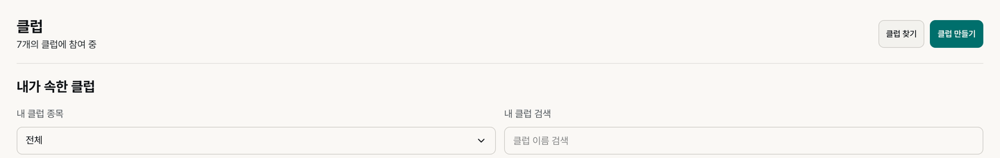
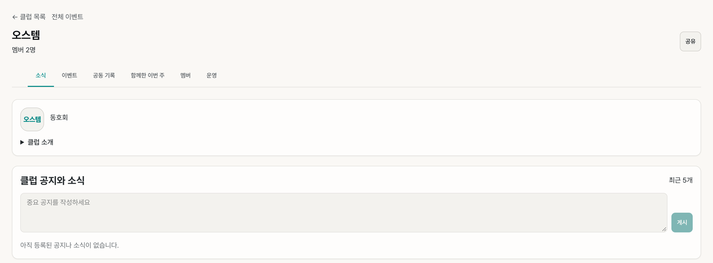
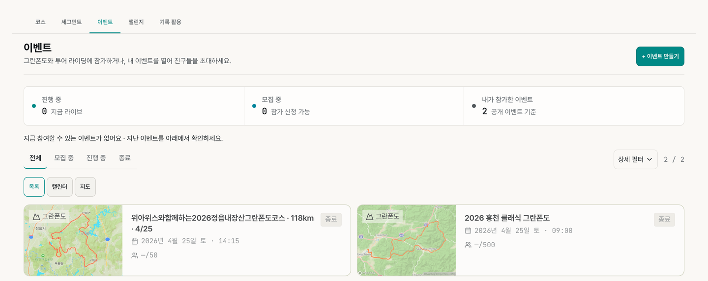
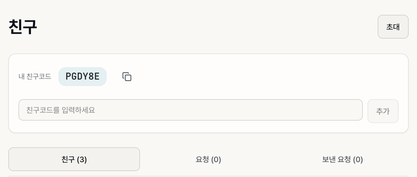

5. 클럽·친구·이벤트
이 장에서 할 수 있는 것
- 클럽에 가입하거나 만들고, 클럽 안에서 소식·공동 기록·이번 주 순위를 봅니다.
- 친구 코드로 친구를 맺고, 친구의 공개 기록을 피드에서 봅니다.
- 이벤트(그란폰도·투어)를 찾아 참가하고, 진행 중인 이벤트를 실시간으로 지켜봅니다.
5.1 클럽 목록 — 가입하기

따라 하기
- 위쪽 메뉴 클럽을 엽니다. 맨 위에 "N개의 클럽에 참여 중"이 보입니다.
- 내가 속한 클럽에서 내 클럽 종목과 내 클럽 검색으로 내 클럽을 찾습니다. 카드의 "리더"는 내가 운영하는 클럽이라는 표시입니다.
- 새 클럽을 찾으려면 클럽 찾기에서 이름·활동 지역을 넣고 종목(전체 · 사이클 · 러닝 · 수영 · 통합)을 고릅니다.
- 운영자에게 초대 코드를 받았다면 아래 초대 코드로 가입에 넣습니다. 초대 링크를 받았다면 링크만 열어도 됩니다.
비공개 클럽은 초대 링크로 가입했거나 멤버 권한이 있는 계정으로만 볼 수 있습니다. 권한이 없으면 "비공개 클럽입니다" 안내가 나옵니다.
5.2 클럽 안의 메뉴

클럽을 열면 클럽 이름과 멤버 수 아래에 클럽 메뉴가 있습니다. 왼쪽 위 ← 클럽 목록 · 전체 이벤트로 다른 곳에 가고, 오른쪽 위 공유로 클럽 링크를 보냅니다.
| 메뉴 | 보이는 것 |
|---|---|
| 소식 | 클럽 소개(펼치기), 클럽 공지와 소식(운영진은 공지를 쓰고 게시), 클럽 라이드 통계, 멤버, 클럽 정보(개설일) |
| 이벤트 | 클럽 이벤트 목록과 달력. 캘린더 구독도 여기서 합니다. |
| 공동 기록 | 같은 날 함께 달린 라이딩을 묶어 멤버별 기록을 비교합니다. 사이클 클럽에만 있습니다. |
| 함께한 이번 주 | 이번 주 순위 (5.3) |
| 멤버 | 멤버 목록과 역할(리더 · 부리더 · 멤버) |
| 운영 | 클럽 정보·권한·알림·초대 관리. 클럽을 만든 사람에게만 보입니다. |
5.3 함께한 이번 주 — 클럽 순위 (옛 리더보드)
- 클럽 안에서 함께한 이번 주를 누릅니다.
- 이동거리 · 활동시간 · 획득고도 중 기준을 골라 멤버 순위를 봅니다.
- 위쪽 활동 멤버 / 전체와 함께한 라이딩 수로 이번 주 클럽 분위기를 봅니다.
집계는 함께한 공개 활동만 셉니다. 주는 월요일 0시(한국 시간)에 새로 시작합니다. 내 기록이 빠졌다면 그 활동의 공개 범위를 확인하세요.
| 이렇게 보이면 | 생각해 볼 것 |
|---|---|
| 활동 멤버가 절반 아래 | 함께 달리는 날을 공지해 볼 때입니다. |
| 상위 몇 명만 거리가 많음 | 초보 멤버가 낄 수 있는 쉬운 코스를 섞어 봅니다. |
| "이번 주 함께한 활동이 없어요" | 아직 이번 주 공개 활동이 없다는 뜻입니다. |
5.4 클럽 만들기
- 클럽 화면 오른쪽 위 클럽 만들기(또는 + 만들기 > 클럽 만들기)를 누릅니다.
- 기본 정보 → 규칙 & 공개 → 확인·만들기 3단계를 따라갑니다. 공개 여부와 가입 승인 방식을 여기서 정합니다.
- 만든 뒤 멤버 화면에서 초대 링크를 공유합니다.
5.5 이벤트 — 찾기 · 참가 · 만들기

따라 하기
- 탐색 > 이벤트를 엽니다.
- 맨 위 세 칸에서 진행 중(지금 라이브) · 모집 중(참가 신청 가능) · 내가 참가한 이벤트 수를 봅니다.
- 전체 · 모집 중 · 진행 중 · 종료 탭과 상세 필터로 고르고, 목록 · 캘린더 · 지도 중 보기 방식을 정합니다.
- 이벤트 카드를 열어 코스·일정·정원을 확인하고, 모집 중이면 참가 신청을 합니다.
참가 전에 볼 것
| 항목 | 판단 |
|---|---|
| 코스 거리 | 최근에 가장 길게 탄 거리와 견줍니다. 훨씬 길면 장거리 연습이 필요합니다. |
| 오르막 등급 | 그 등급을 올라 본 적이 있는지(4.3) |
| 거리당상승 | 평소 코스보다 얼마나 힘든지 |
이벤트 만들기
오른쪽 위 + 이벤트 만들기로 기본 정보 → 코스 · 일정 → 참가 설정 3단계를 따라갑니다. 등록된 코스가 있어야 결과를 비교하기 쉬우니, 코스를 먼저 만들어 두세요(4.6).
이벤트 결과의 순위·완주 시간은 같은 코스·같은 날 조건 안에서의 값입니다. 다음 대회 목표 시간을 정하는 기준으로 쓰세요.
5.6 친구 맺기

따라 하기
- 아바타 > 친구를 엽니다.
- 맨 위 내 친구코드(6자리) 옆 복사 아이콘으로 코드를 복사해 상대에게 보냅니다. 오른쪽 위 초대로 초대 링크를 보내도 됩니다.
- 상대의 코드를 받았다면 친구코드를 입력하세요 칸에 넣고 추가를 누릅니다.
- 아래 친구 · 요청 · 보낸 요청 탭에서 목록과 요청을 봅니다. 받은 요청은 "요청" 탭에서 수락하거나 거절합니다.
친구가 되면 홈 최근 활동의 친구 필터에서 친구의 기록이 보입니다. 앱에서 맺은 친구도 웹에 그대로 나옵니다. 친구 관계를 끊으려면 목록의 삭제를 누릅니다.
비슷한 거리·코스를 달린 친구의 기록과 견줄 때도 사이클 km와 러닝 km는 따로 보세요.
5.7 라이브 이벤트 — 실시간으로 지켜보기
진행 중인 이벤트의 라이브 화면에서는 참가자 위치와 진행 상황을 지켜봅니다.
- 내가 응원하는 선수 칸에 배번을 넣고 선수 추가를 누릅니다. 그 선수가 지도와 목록에 표시됩니다.
- 선수 카드에서 순위 · 진행률 · 속도 · 상태(주행 중 · 완주 · DNF 등)를 봅니다.
- 최근 하이라이트에 응원 선수의 체크포인트 통과·완주 소식이 시간순으로 쌓입니다.
시작 전이면 "이벤트가 아직 시작되지 않았어요" 안내가 나오고, 출발 뒤 첫 위치가 들어오면 라이브 화면으로 바뀝니다. 심박·운동 시간은 참가자 앱이 보낼 때만 채워지고, 없으면 "—"입니다.
5.8 자주 막히는 점
| 이럴 때 | 확인할 것 |
|---|---|
| 클럽 순위에 내가 없어요 | 이번 주 활동이 공개인지, 클럽 멤버로 가입이 끝났는지(가입 승인 대기일 수 있음) |
| "비공개 클럽입니다"가 떠요 | 초대 링크로 가입하거나 운영자에게 초대를 요청하세요. |
| 친구 기록이 안 보여요 | 홈 최근 활동이 "친구"인지, 친구가 그 활동을 공개했는지 |